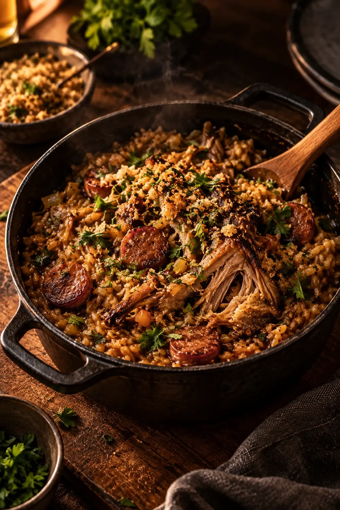

Antes de existir cozinha, existia o fogo. E ao redor dele, as pessoas se reuniam para comer, contar histórias e ficar.
O Sagrado Fogão nasceu dessa imagem. Um restaurante onde a brasa ocupa o centro da casa, a cozinha fica à vista e a mesa é o lugar mais importante do salão.

Origem
A casa na Rua Harmonia foi escolhida pelo pé-direito alto, pelos tijolos aparentes e pelo quintal nos fundos, onde hoje fica o forno a lenha.
A ideia era simples: abrir um restaurante na Vila Madalena que tivesse o conforto de uma casa e o cuidado de uma cozinha autoral.
Uma cozinha que reconhece de onde vem.
Arroz caldoso, mandioca, feijão, farofa, peixe na folha, doce de tacho. O ponto de partida são receitas que muitos brasileiros conhecem desde a infância.
A técnica contemporânea entra para dar precisão: cocções longas, fermentações, defumação, pontos exatos. O sabor de origem continua reconhecível em cada prato.


Ingredientes
O cardápio acompanha a estação e o que os produtores têm de melhor. Trabalhamos com fornecedores fixos, pequenos e próximos, e com regiões que definem o sabor brasileiro.
- Queijos curadosSerra da Canastra, MG
- Peixes e frutos do marLitoral Norte, SP
- Farinhas e tucupiBragança, PA
- Hortaliças e ervasCinturão verde de São Paulo
- Cachaças de alambiqueSul de Minas, MG


Hospitalidade
Receber bem é a parte do trabalho que não aparece no prato. Uma equipe que conhece cada receita, sugere sem pressa e percebe quando a mesa quer conversa ou silêncio.
Aqui, ninguém precisa se arrumar para jantar bem. Basta chegar.
À frente do fogão
Chef Rafael Monteiro
Com uma cozinha construída entre memória, técnica e ingredientes brasileiros, Rafael Monteiro encontrou no fogo uma forma de reinterpretar sabores que atravessam gerações.
Sua cozinha parte do princípio de que sofisticação não precisa significar distância — ela pode estar em um ingrediente simples tratado com respeito.
“Quero que a pessoa prove e reconheça alguma coisa. Depois, que se surpreenda.”